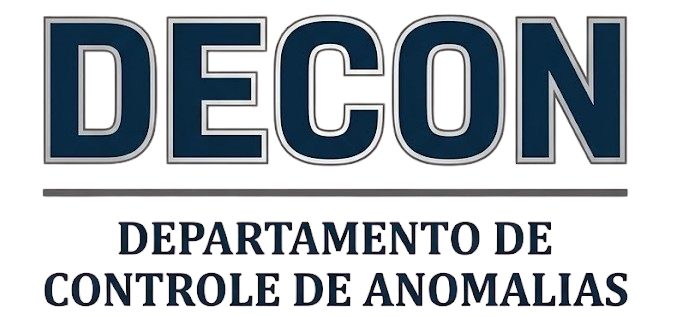

FACÇÕES
Forças que operam nas sombras de Morro Alto.
INSTITUTO ÍRIS
“Cuidando do que você vê” OPERAÇÃO CLANDESTINA, REATIVADA// A FACHADA Anos 50–80
Atuavam como consultores de “higiene mental” e padrões técnicos para as emissoras de TV. Na verdade, inseriam frequências e mensagens subliminares para manter a população em um estado de ansiedade constante, facilitando o controle social por uma elite oculta.
// O DECLÍNIO
Ironicamente, a “estética do medo” que eles cultivaram fugiu do controle. Com a popularização dos Slashers (Sexta-Feira 13, A Hora do Pesadelo), o público se tornou “imune” ou até viciado no susto. O medo virou mercadoria de prateleira de locadora, e o Instituto perdeu sua eficácia, sendo desmascarado por investigações internas.
// O RETORNO
Morro Alto é o lugar perfeito. Uma cidade pequena, com sinal de TV analógico ainda forte e muitas áreas de sombra. Eles voltaram para provar que o caos real ainda é mais forte que qualquer fita de ficção.
A VIGÍLIA
Os Justiceiros do Invisível DESAPARECIDA, SINAL DETECTADO// A MISSÃO
Um grupo paramilitar/esotérico que operava nas sombras para conter o paranormal. Eles não eram exatamente “heróis”; eram censores. Acreditavam que a verdade sobre o extraordinário destruiria a sociedade, então faziam de tudo para esconder evidências e eliminar ameaças.
// O PARADOXO DE NIL Membro Identificado: Nil (Voz na Fita V-001)
Nil não é mais um homem de carne e osso. Ele se tornou sinal puro. Quando a Vigília se desfez há 10 anos, Nil encontrou uma forma de “transmitir” sua consciência para a malha magnética das fitas VHS.
// O SILÊNCIO
A Vigília desapareceu quando o Instituto Íris caiu. Parecia que a missão deles tinha acabado, ou que tinham sido aniquilados junto com os inimigos. A fita que surgiu na locadora é o primeiro sinal de vida (ou de rádio) da Vigília em uma década.

DECON
Departamento de Controle de Anomalias ULTRASSECRETO, NÍVEL FEDERAL// PERFIL OPERACIONAL Codinome: “Os Engravatados” / “Ozomi de Preto”
O DECON é o “zelador” do governo brasileiro. Eles não estão lá para salvar pessoas, mas para garantir que o público nunca saiba que existe algo a ser salvo. Operam no vácuo deixado pela queda da Vigília, mas com muito mais recursos e muito menos escrúpulos.
// A ABORDAGEM
“Podem ir, crianças, assumimos daqui.” Essa é a frase clássica. Eles chegam quando o monstro já foi derrotado ou a anomalia já se estabilizou. Isolam a área com fitas amarelas genéricas, confiscam câmeras, bips e fitas, e intimidam testemunhas com termos jurídicos e ameaças veladas.
// O ESTILO 1999
Ternos pretos de corte barato, óculos escuros (mesmo dentro de túneis) e frotas de VW Santana ou Ford Versailles pretos, vidros fumê e suspensão baixa devido ao peso dos equipamentos nos porta-malas.